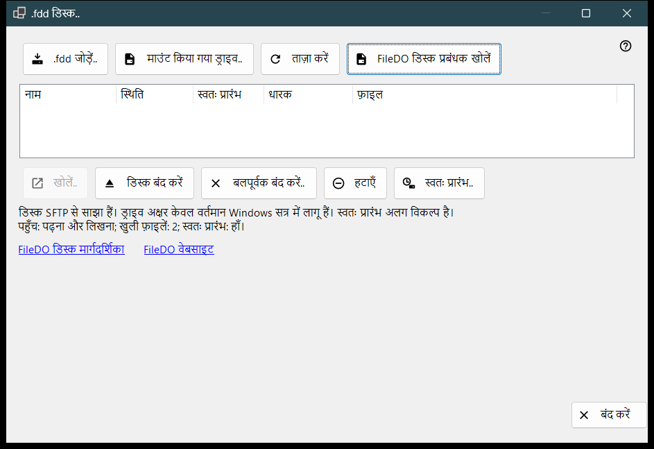
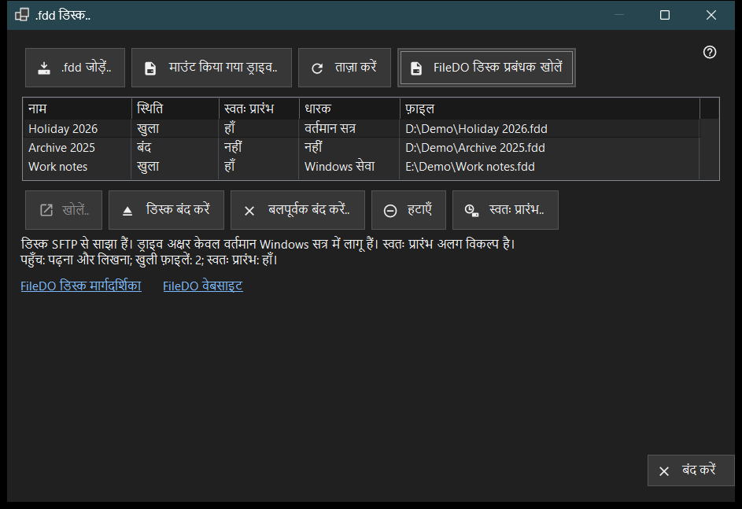

.fdd डिस्क
यह किस लिए है
उन FileDO .fdd डिस्कों की सूची दिखाती है जिन्हें यह पीसी SFTP पर साझा करता है, और रोज़ के डिस्क कमांड देती है: डिस्क जोड़ना, उसे खोलना या बंद करना, उसका साझाकरण रोकना, और यह तय करना कि वह सर्वर के साथ खुले या नहीं। यह Share Manager की मुख्य विंडो के जोड़ें मेनू के .fdd डिस्क.. आइटम से खुलती है।


इस क्रम में
- .fdd जोड़ें.. बटन दबाएँ, .fdd फ़ाइल चुनें और विकल्प संवाद की पुष्टि करें।
- सूची में डिस्क चुनें; सूची के नीचे की पंक्ति उसका एक्सेस मोड, खुली फ़ाइलें और स्वतः प्रारंभ दिखाती है।
- बंद डिस्क के लिए खोलें.., खुली डिस्क के लिए डिस्क बंद करें, और स्वचालित रूप से खुलना बदलने के लिए स्वतः प्रारंभ.. का उपयोग करें।
- स्थिति दोबारा पढ़ने के लिए ताज़ा करें दबाएँ; विंडो उसे हर 10 सेकंड में भी दोबारा पढ़ती है।
- बाहर निकलने के लिए बंद करें दबाएँ।
तत्व
डिस्क सूची
हर पंक्ति एक साझा डिस्क है: नाम, स्थिति (खुला, खुल रहा है, बंद हो रहा है, बंद, लॉक, त्रुटि या अज्ञात), स्वतः प्रारंभ, धारक और .fdd फ़ाइल का पथ (कॉलम फ़ाइल)। धारक बताता है कि डिस्क को खुला कौन रखे है: Windows सेवा, वर्तमान सत्र, या कोई भी न रखे तो नहीं। पूरा पथ देखने के लिए पंक्ति पर कर्सर ले जाएँ। पहली पंक्ति अपने आप चुनी जाती है, और सूची के नीचे की पंक्ति उसका एक्सेस (केवल पढ़ने योग्य या पढ़ना और लिखना), खुली फ़ाइलों की संख्या और स्वतः प्रारंभ दिखाती है। जब साझा करने वाली सेवा डिस्क साझा नहीं कर सकती, तो सूची और कमांड बटन छिप जाते हैं और वह पंक्ति कारण बताती है; और यदि डिस्क को FileDO ने ही माउंट किया है, तो FileDO डिस्क प्रबंधक खोलें लिंक दिखता है।
.fdd जोड़ें..
कोई .fdd फ़ाइल चुनें और उसे साझाकरण के लिए पंजीकृत करें। विकल्प संवाद नाम, केवल पढ़ने योग्य का चुनाव और पंजीकरण के बाद खोलें (डिफ़ॉल्ट रूप से चुना हुआ) पूछता है। एन्क्रिप्टेड डिस्क के लिए वह पासवर्ड भी पूछता है, और आप डिस्क को ड्राइव अक्षर दे सकते हैं या बिना अक्षर - केवल साझाकरण रख सकते हैं। अक्षर केवल वर्तमान Windows सत्र तक रहता है। यदि डिस्क अब भी FileDO में खुली है, तो पहले उसे वहाँ सहेजकर बंद करें। यदि पंजीकरण सफल हो पर डिस्क न खुले, तो एक संदेश यह बताता है और डिस्क सूची में बंद के रूप में रहती है।
माउंट किया गया ड्राइव..
इस पीसी का कोई तैयार ड्राइव चुनें, उदाहरण के लिए ऐसी डिस्क जिसे FileDO पहले ही माउंट कर चुका है। विंडो बंद हो जाती है और मुख्य विंडो उस ड्राइव के लिए अपना सामान्य फ़ोल्डर जोड़ने का चरण जारी रखती है।
खोलना, बंद करना और हटाना
खोलें.. बंद, लॉक या विफल डिस्क को फिर से खोलता है और एन्क्रिप्टेड डिस्क का पासवर्ड पूछता है। डिस्क बंद करें केवल खुली डिस्क के लिए उपलब्ध है; क्लाइंट अस्थायी रूप से एक्सेस खो देते हैं और खुली फ़ाइलों को बंद होने के लिए 30 सेकंड तक का समय मिलता है। बलपूर्वक बंद करें.. खुली फ़ाइलों को तुरंत डिस्कनेक्ट कर देता है, इसलिए न सहेजा गया डेटा खो सकता है। हटाएँ साझाकरण रोक देता है: डिस्क बंद हो जाती है, उसकी स्वतः प्रारंभ सेटिंग और सहेजी गई कुंजी हटा दी जाती हैं, और .fdd फ़ाइल बनी रहती है। इनमें से हर क्रिया पहले पुष्टि माँगती है, और डिफ़ॉल्ट उत्तर रद्द करें होता है।
स्वतः प्रारंभ
स्वतः प्रारंभ कॉलम हर डिस्क के लिए बिना चुने हाँ या नहीं दिखाता है। डैश (-) का अर्थ है कि साझा करने वाली सेवा स्वतः प्रारंभ का समर्थन नहीं करती; तब स्वतः प्रारंभ.. बटन अक्षम रहता है। स्वतः प्रारंभ.. पुष्टि के बाद सेटिंग बदलता है: चालू करने पर डिस्क सर्वर के साथ खुलती है, और एन्क्रिप्टेड डिस्क का पासवर्ड इस पीसी के सुरक्षित Windows भंडारण में सहेजा जाता है; बंद करने पर वह सहेजी हुई कुंजी हट जाती है। यह सेटिंग स्थिति से स्वतंत्र है, इसलिए बंद या विफल डिस्क में भी स्वतः प्रारंभ चालू हो सकता है। मुख्य विंडो की सूचियों में FileDO की पंक्तियाँ भी इसे दिखाती हैं।
मार्गदर्शिका, वेबसाइट और बंद करें
FileDO डिस्क मार्गदर्शिका और FileDO वेबसाइट उस FileDO प्रोग्राम की मार्गदर्शिका और साइट खोलते हैं जिससे ये डिस्क आती हैं। यदि इस पीसी पर FileDO डिस्क प्रबंधक नहीं मिलता, तो विंडो कहती है कि FileDO को उसकी वेबसाइट से स्थापित करें। बंद करें विंडो से बाहर निकलता है; डिस्क पर कोई ऑपरेशन चल रहा हो तो विंडो बंद नहीं हो सकती।
प्रबंधक सेटिंग · SFTP साझाकरण सेटिंग · एक्सचेंज सर्वर सेटिंग